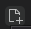

Get Started 🥱
html css 😈😈😈
Home |
Handout |
Cheatsheet |
Publish (for Adventurers)
GOAL
You will choose a word and recreate a one-page Wikipedia local webpage using html and css code.
Include at least 3 images (can be whatever) and at least 5 paragraphs (copied from Wiki).
Include multiple font styles and colors
Add an active orignal Wikipedia page link.
Bonus points: create CSS animation and/or add a second page!
WORKFLOW
Step 1: Create a Folder
Create a folder. Name your folder "Your Name Coding Practice".
Note: if you use school computer, save your folder in your network folder so that you can access wherever you log in.
!!IMPORTANT!!
Add all the images you will be using in this folder.
Your CSS file should be in this folder as well.
You will submit your coding homework by uploading the entire folder.
Step 2: Open Folder in Visual Studio Code
Go to vscode.dev
On the left top corner, click "Open Folder" and choose the empty folder you just created.
click "Select"
Step 3: Create two new files for HTML and CSS code
Click on this icon "new file..."

Title your new file "index.html"
Click on the icon again to create another new file
Tilte this new file "style.css"
Step 4:
Click and open "index.html" file
In the first line, type in "!", then press your "enter/return" key on keyboard.
Your html file is now declared
Inside of the <head> tag, type in <link rel="stylesheet" href="style.css">
Now you have linked your css file to the html file
Step 5:
Start to edit your html code inside <body> tag
https://cssgradient.io